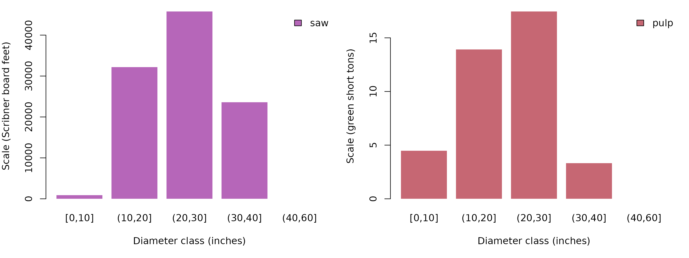
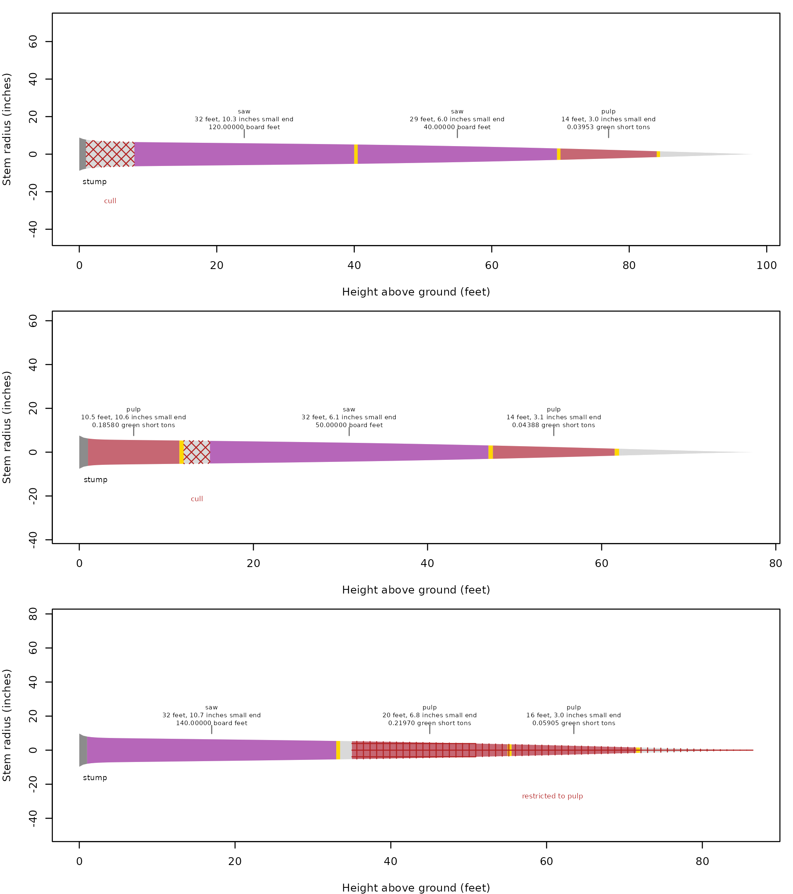
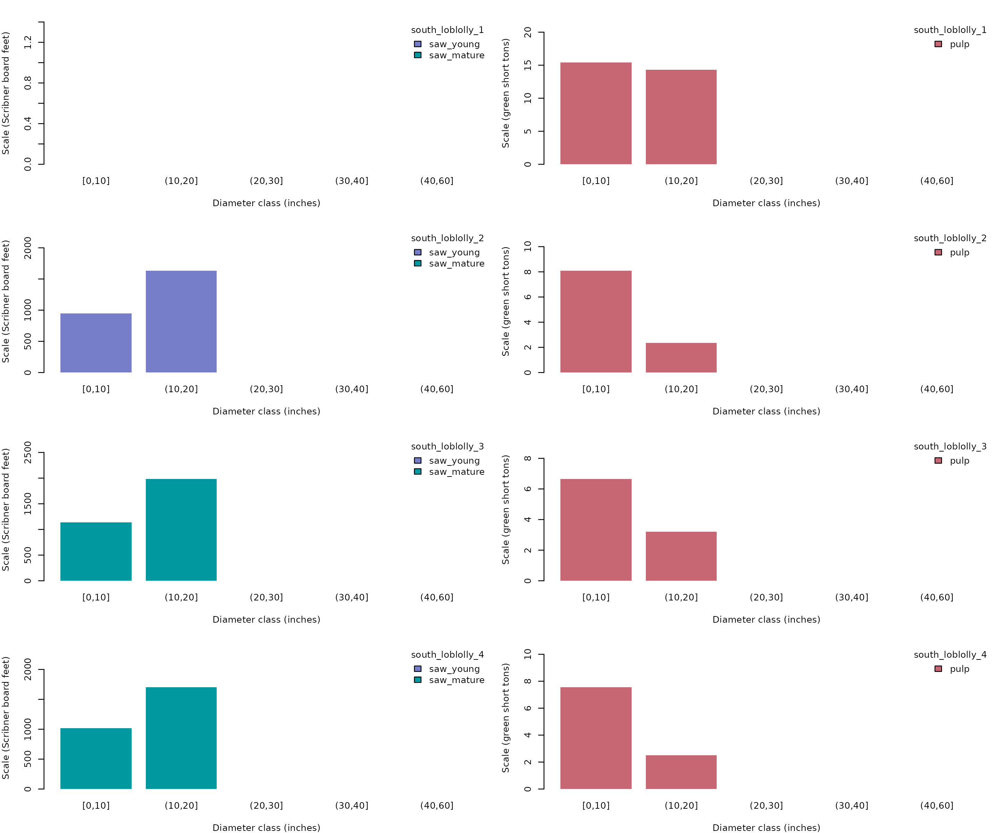

A tree-list calculation returns logs and residual sections keyed to the original trees, so stand and species attributes can be joined back for summaries. Use the same workflow for completed heights, located defects, and stopper columns converted to defects. The shipped lists are synthetic examples with diameters in inches and heights in feet, and their unweighted totals describe the listed trees rather than an area estimate.
Which products apply to the Pacific Northwest list?
The specifications below accept sawlogs before pulp because that is
their order in products(). The pulp name matches
restrictions in the shipped defect records. The sawlog sweep limit also
gives the recorded sweep percentages an explicit eligibility test.
## Attach the calculation and data tools
library(merchandiser)
library(dplyr)
## Assign sawlog dimensions and a sweep limit
saw <- product(product = 'saw', ## product label
min_length = 16, ## feet
max_length = 32, ## feet
trim = 0.5, ## feet
min_sed = 6, ## inches inside bark
max_sweep = 10, ## percent
volume_unit = 'scribner') ## board feet
## Accept shorter and smaller sections as pulp
pulp <- product(product = 'pulp', ## product label
min_length = 8, ## feet
max_length = 20, ## feet
trim = 0.5, ## feet
min_sed = 3, ## inches inside bark
volume_unit = 'green_ton') ## green short tons
## Combine products and retain the full tree list
specifications <- products(saw, pulp)
## Retain the tree attributes for later joins
trees <- example_trees_pnw
## Select logs with the matching located defects
pnw <- merchandise(tree_id = trees$tree_id,
dbh = trees$dbh,
ht = trees$ht,
spcd = trees$spcd,
products = specifications,
defects = example_defects_pnw)A single call retains the tree identifier on every log, residual, and status row. Trees with no selected logs still need review through their residual and status records, because absence from the log table alone does not identify the reason.
How are logs summarized by stand?
Join attributes by tree_id, then group by the attributes
and measurement basis needed for the summary. Keeping both product and
volume_unit in the grouping prevents a board foot total
from absorbing weight scale. The example supplies no expansion factors,
so none are introduced here.
## Attach stand and diameter to each selected log
pnw_logs <- pnw$logs %>%
left_join(y = trees %>%
select(tree_id, stand, dbh),
by = 'tree_id')
## Keep each product in its own scale unit
pnw_totals <- pnw_logs %>%
group_by(stand, product, volume_unit) %>%
summarize(scale = sum(scale), .groups = 'drop')| stand | product | scale (Scribner board feet) | scale (green short tons) |
|---|---|---|---|
| pnw_west | pulp | NA | 39.172 |
| pnw_west | saw | 102440 | NA |
The saw product totals 102440 Scribner board feet across the listed Pacific Northwest trees.
Diameter classes can be calculated after the join, using the same tree measurement for each of its logs. The separate panels below retain product measurement units. Bars stack products only within a common scale basis.
| product | diameter class (inches) | scale (Scribner board feet) | scale (green short tons) |
|---|---|---|---|
| pulp | [0,10] | NA | 4.476 |
| pulp | (10,20] | NA | 13.917 |
| pulp | (20,30] | NA | 17.456 |
| pulp | (30,40] | NA | 3.322 |
| saw | [0,10] | 910 | NA |
| saw | (10,20] | 32170 | NA |
| saw | (20,30] | 45780 | NA |
| saw | (30,40] | 23580 | NA |
The first diameter class contributes 4.476 green short tons to the pulp panel.

The diameter-class bars allocate the same 102440 Scribner board feet among the measured size classes, without combining it with pulp weight.
Logs in the stacked drawings
| tree_id | product | start (feet) | end (feet) | length (feet) | small-end diameter (inches) | scale (Scribner board feet) | scale (green short tons) |
|---|---|---|---|---|---|---|---|
| 7 | saw | 8.0 | 40.5 | 32.0 | 10.258 | 120 | NA |
| 7 | saw | 40.5 | 70.0 | 29.0 | 6.019 | 40 | NA |
| 7 | pulp | 70.0 | 84.5 | 14.0 | 3.017 | NA | 0.040 |
| 14 | pulp | 1.0 | 12.0 | 10.5 | 10.574 | NA | 0.186 |
| 14 | saw | 15.0 | 47.5 | 32.0 | 6.051 | 50 | NA |
| 14 | pulp | 47.5 | 62.0 | 14.0 | 3.092 | NA | 0.044 |
| 28 | saw | 1.0 | 33.5 | 32.0 | 10.731 | 140 | NA |
| 28 | pulp | 35.0 | 55.5 | 20.0 | 6.826 | NA | 0.220 |
| 28 | pulp | 55.5 | 72.0 | 16.0 | 3.039 | NA | 0.059 |
The first displayed tree starts cutting at 8 feet, above its cull.

The first stacked drawing begins above the cull ending at 8 feet. The other drawings show how a later cull and a pulp restriction change cuts on their respective trees.
How do age limits change the southern products?
The southern list contains stands of different ages and stopper heights for some trees. Age limits use inclusive lower and exclusive upper endpoints. Passing the tree ages allows the same dimensions to produce separate age-limited sawlog products without assigning those products manually by stand.
## Accept sawlogs from younger qualifying trees
saw_young <- product(product = 'saw_young', ## product label
min_age = 20, ## years
max_age = 35, ## years, excluded
min_length = 16, ## feet
max_length = 32, ## feet
trim = 0.5, ## feet
min_sed = 6, ## inches inside bark
volume_unit = 'scribner') ## board feet
## Assign older qualifying trees to a separate sawlog product
saw_mature <- product(product = 'saw_mature', ## product label
min_age = 35, ## years
min_length = 16, ## feet
max_length = 32, ## feet
trim = 0.5, ## feet
min_sed = 6, ## inches inside bark
volume_unit = 'scribner') ## board feet
## Keep smaller and age-ineligible wood eligible for pulp
pulp <- product(product = 'pulp', ## product label
min_length = 8, ## feet
max_length = 20, ## feet
trim = 0.5, ## feet
min_sed = 3, ## inches inside bark
volume_unit = 'green_ton') ## green short tons
## Set the southern list and its ordered specifications
south_trees <- example_trees_south
## Offer age-qualified sawlogs before pulp
south_specs <- products(saw_young, saw_mature, pulp)
## Turn stopper columns into located defect records
south_defects <- defects_from_stoppers(tree_id = south_trees$tree_id,
ht = south_trees$ht,
topwood_product = 'pulp',
saw_stop = south_trees$saw_stop,
pulp_stop = south_trees$pulp_stop,
jump_butt = south_trees$jump_butt)
## Apply age limits and converted stopping heights
south <- merchandise(tree_id = south_trees$tree_id,
dbh = south_trees$dbh,
ht = south_trees$ht,
spcd = south_trees$spcd,
products = south_specs,
age = south_trees$age,
defects = south_defects)
## Join stand ages to the southern log record
south_logs <- south$logs %>%
left_join(y = south_trees %>%
select(tree_id, stand, age, dbh),
by = 'tree_id')
## Summarize products within stands and their own units
south_totals <- south_logs %>%
group_by(stand, age, product, volume_unit) %>%
summarize(scale = sum(scale), .groups = 'drop')| stand | age (years) | product | scale (Scribner board feet) | scale (green short tons) |
|---|---|---|---|---|
| south_loblolly_1 | 15 | pulp | NA | 29.697 |
| south_loblolly_2 | 25 | pulp | NA | 10.436 |
| south_loblolly_2 | 25 | saw_young | 2580 | NA |
| south_loblolly_3 | 35 | pulp | NA | 9.847 |
| south_loblolly_3 | 35 | saw_mature | 3120 | NA |
| south_loblolly_4 | 45 | pulp | NA | 10.042 |
| south_loblolly_4 | 45 | saw_mature | 2720 | NA |
The youngest stand is 15 years old and supplies pulp only under these age limits. The other stands shift from the younger to the mature sawlog product when their ages reach the specified boundary.
| stand | age (years) | product | diameter class (inches) | scale (Scribner board feet) | scale (green short tons) |
|---|---|---|---|---|---|
| south_loblolly_1 | 15 | pulp | [0,10] | NA | 15.389 |
| south_loblolly_1 | 15 | pulp | (10,20] | NA | 14.308 |
| south_loblolly_2 | 25 | pulp | [0,10] | NA | 8.075 |
| south_loblolly_2 | 25 | pulp | (10,20] | NA | 2.361 |
| south_loblolly_2 | 25 | saw_young | [0,10] | 950 | NA |
| south_loblolly_2 | 25 | saw_young | (10,20] | 1630 | NA |
| south_loblolly_3 | 35 | pulp | [0,10] | NA | 6.642 |
| south_loblolly_3 | 35 | pulp | (10,20] | NA | 3.205 |
| south_loblolly_3 | 35 | saw_mature | [0,10] | 1140 | NA |
| south_loblolly_3 | 35 | saw_mature | (10,20] | 1980 | NA |
| south_loblolly_4 | 45 | pulp | [0,10] | NA | 7.543 |
| south_loblolly_4 | 45 | pulp | (10,20] | NA | 2.499 |
| south_loblolly_4 | 45 | saw_mature | [0,10] | 1020 | NA |
| south_loblolly_4 | 45 | saw_mature | (10,20] | 1700 | NA |
The youngest stand contributes 15.389 green short tons in its first occupied diameter class.

The youngest stand supplies 29.697 green short tons across its pulp bars and has no sawlog contribution. Each stand has a separate row, and pulp remains on its own weight axis.
Did any trees fail the calculation?
The status table contains only reported tree conditions. An empty table indicates that no condition was recorded, not that every tree supplied every product. Here a separate clean call and a deliberately invalid diameter show the distinction without changing the shipped tree list.
## Keep a valid single tree for the status comparison
tree <- example_trees %>%
filter(tree_id == 5)
## Select logs without located defects
clean <- merchandise(tree_id = tree$tree_id,
dbh = tree$dbh,
ht = tree$ht,
spcd = tree$spcd,
products = saw)
## Inspect the clean run's status rows
clean$status
#> [1] tree_id status name description
#> <0 rows> (or 0-length row.names)The clean run reports 0 status rows.
## Inspect the effect of an invalid tree diameter
bad <- merchandise(tree_id = bad_tree$tree_id,
dbh = bad_tree$dbh,
ht = bad_tree$ht,
spcd = bad_tree$spcd,
products = saw)| tree_id | status | name | description |
|---|---|---|---|
| 5 | 2 | invalid_dbh | Diameter at breast height must be greater than zero and at most 400 inches. |
The invalid diameter produces status 2, identifying the input that prevented calculation.
## Look up the reported code's category and description
codes <- status_codes() %>%
filter(status %in% bad$status$status)| status | name | category | description | source |
|---|---|---|---|---|
| 2 | invalid_dbh | input | Diameter at breast height must be greater than zero and at most 400 inches. | stem model |
Code 2 belongs to the input category.
Which assumptions were recorded?
The result stores the equation and stump choice for each tree. When an outside bark calculation needs a supplementary bark ratio, its record includes the ratio’s source and diameter basis. Inspect these rows before comparing runs that used different assignments or auxiliary measurements.
## Extract the clean run's recorded assumptions
record <- assumptions(x = clean)| tree_id | assumption | spcd | model | value (see unit column) | unit | basis | product | source |
|---|---|---|---|---|---|---|---|---|
| 5 | species_model | 202 | F00FW2W202 | NA | NA | NA | NA | species_default |
| 5 | stump_height | 202 | F00FW2W202 | 1 | feet | NA | NA | stump_ht |
The stump row records 1 foot from the call’s stump input. The equation row records its identifier and selection source, rather than an estimate of model uncertainty.
How are threads controlled?
threads() reports the current worker limit or changes it
when supplied a count. with_threads() restores the previous
limit after evaluating an expression, including when evaluation fails.
The temporary setting below is useful when a larger script needs a
predictable calculation limit.
## Inspect the current thread limit
threads()
#> [1] 1
## Run a measurement under a temporary limit
with_threads(n = 1,
code = dib(dbh = tree$dbh,
ht = tree$ht,
h = 20,
spcd = tree$spcd))
#> value status
#> 1 15.63832 0The temporary call uses the requested single worker and returns an inside bark diameter in inches. Thread settings change execution resources, not the product definitions or scale units.